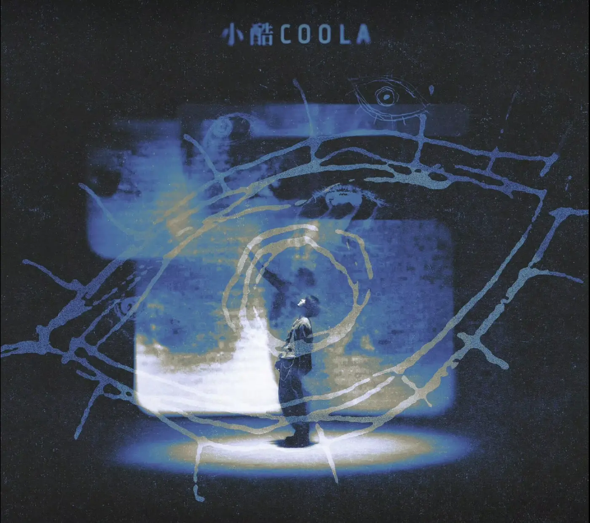

让光停在瞳孔上FIND THE PUPIL · CLICK TO ENTER · 建议开启声音

FRAGMENT 01
灯火
别追它。停下来，让一个片段自己浮近。
UNOFFICIAL FAN-MADE EXPERIENCE · 2026
FLOATERSMUSIC FRAGMENTS IN THE EYE
00 / 06
让光停在瞳孔上FIND THE PUPIL · CLICK TO ENTER · 建议开启声音

别追它。停下来，让一个片段自己浮近。